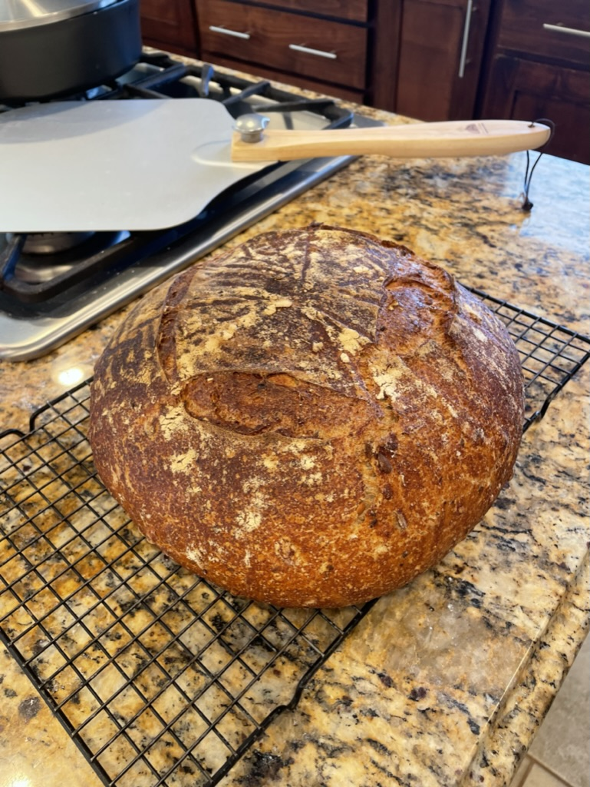
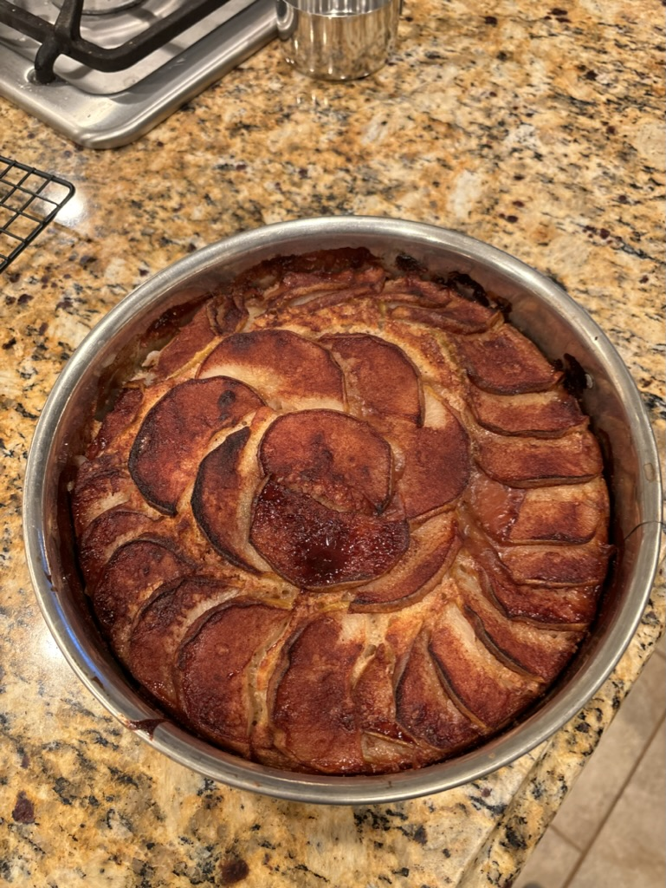
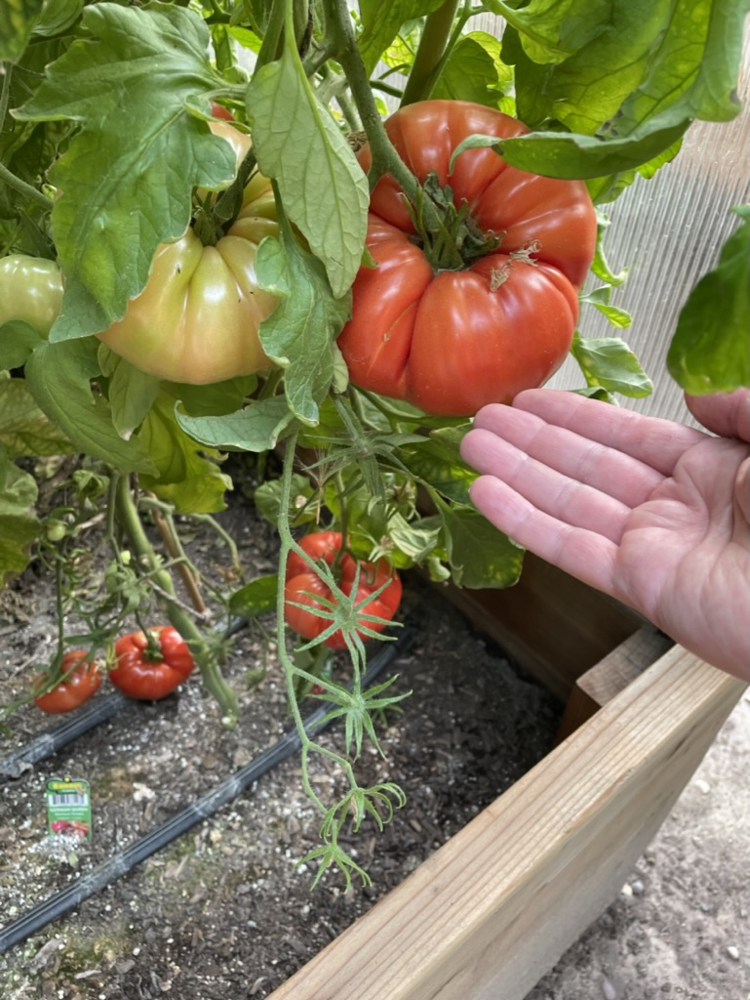
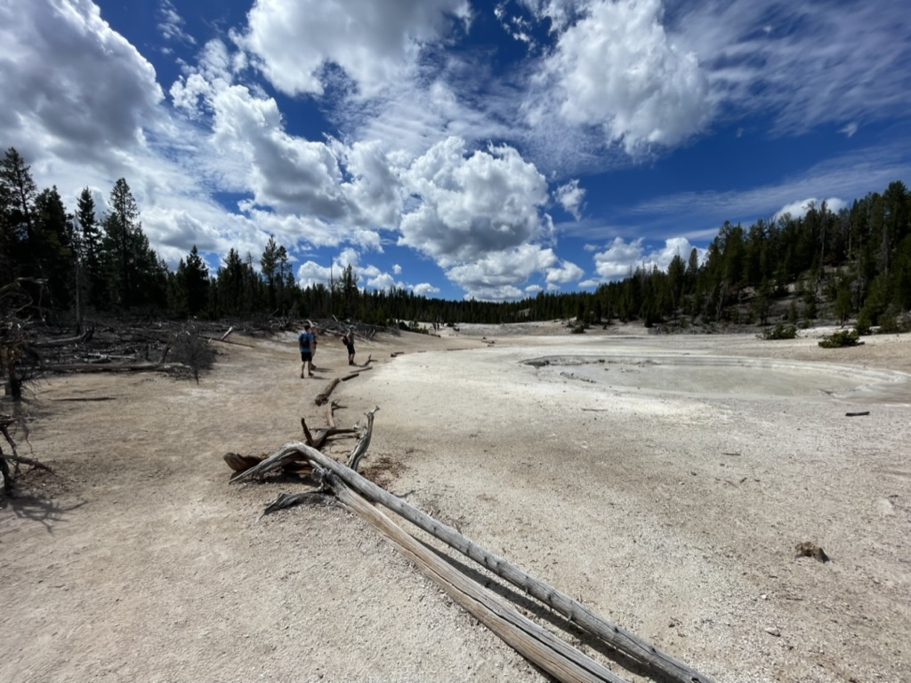
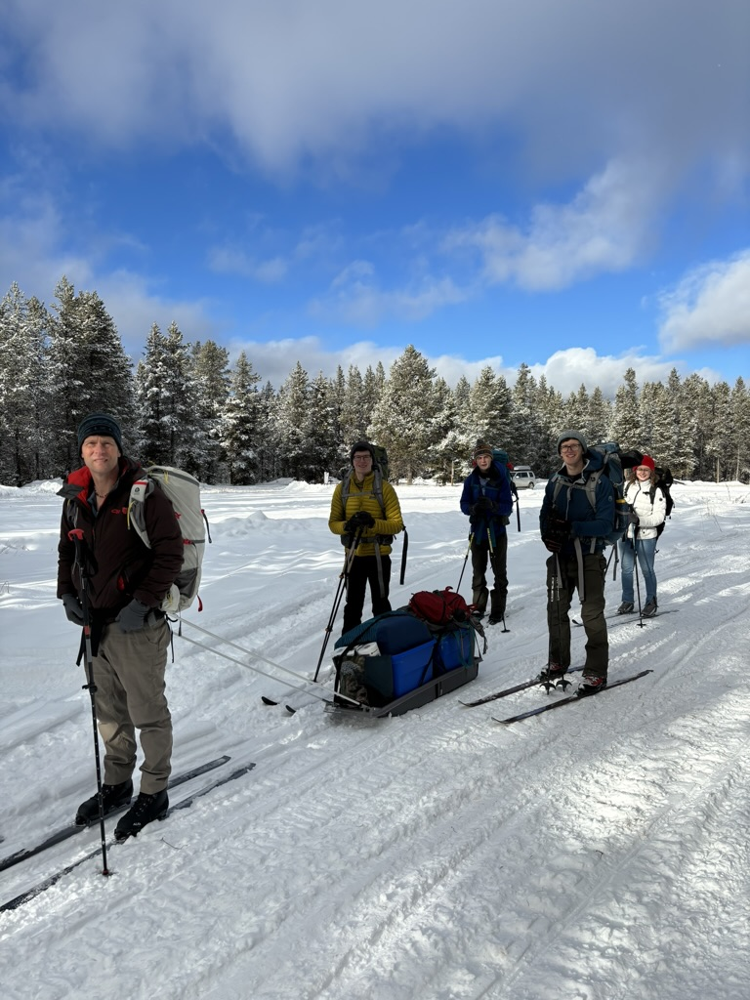

I am currently a professor at BYU-Idaho teaching courses in Web Design
and Development. I have been in this role for about 12 years now.
Before that I spent time as a systems administrator for a school
district, and before that a High School teacher.
Teaching seems to be in my blood. 😁
I live in Rexburg, and was in fact raised here. Because of this I was
excited for the opportunity to move back and raise my three sons here.
I have spent about 20 of the last 25 years with a calling in the young
mens organization. I still love it.
I have always thought that pictures are a much better way to introduce
something than words...and so the rest of my introduction to my
interests will come through images.
Bro Thompson with his family, trying to figure out how to take a
selfie. Is it still a "selfie" when it is a group?

When we moved to Rexburg I told my wife: "Would it be ok if I
started baking bread?" She said yes. (Actually she said "Is this a
trick question?") This is one of my Sourdough loaves 😍

Truly delicious Pear Cake. One of the best ways I have discovered to
use up that glut of pears that ripen all at the same time in the
fall.

I also love to garden. Fresh tomatoes are one of the things I get
excited about every year.
My family and I love Yellowstone National Park. We try to go several
times a year because it is so close. This is the Grand Canyon of the
Yellowstone.

Here is a picture of a mud pot we found on a hike in Yellowstone.

As any good Rexburg native will tell you, one has to embrace winter
when living here. This is my family and I getting ready to ski into
a cabin for Christmas!